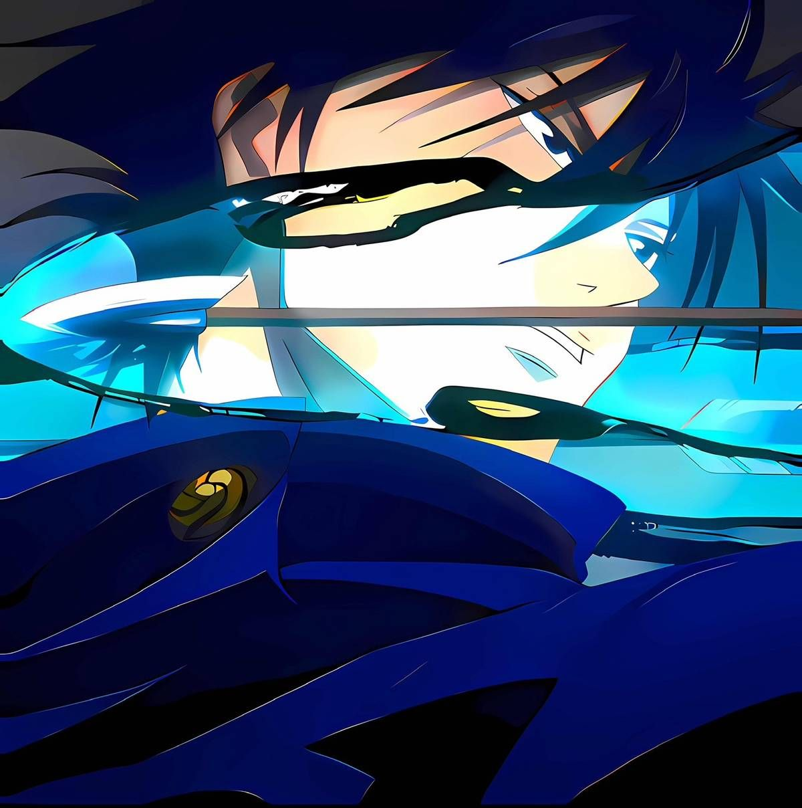
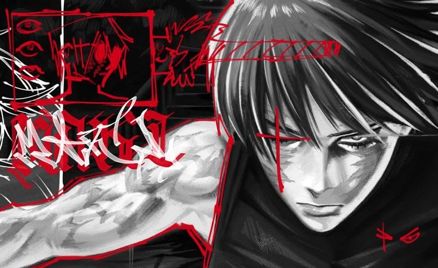
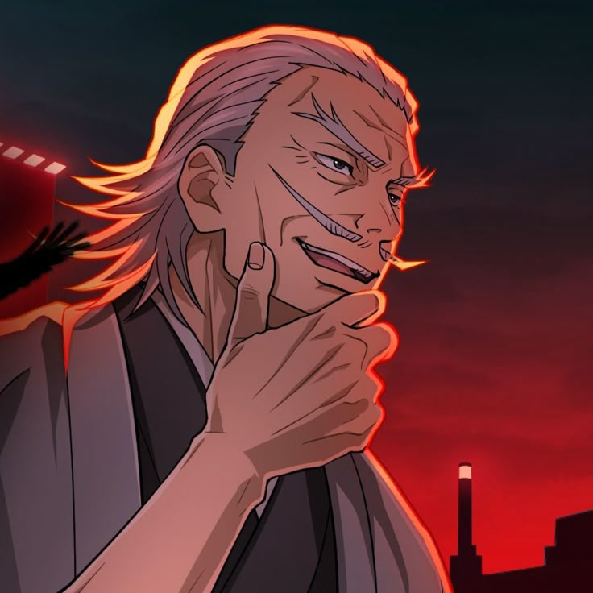
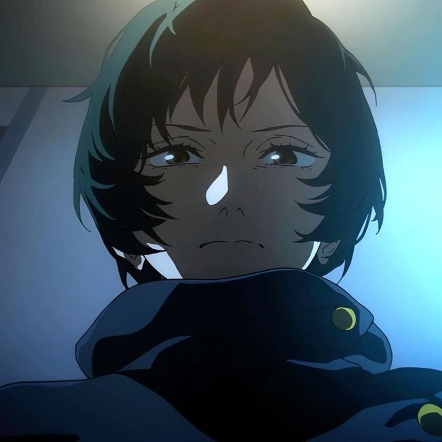
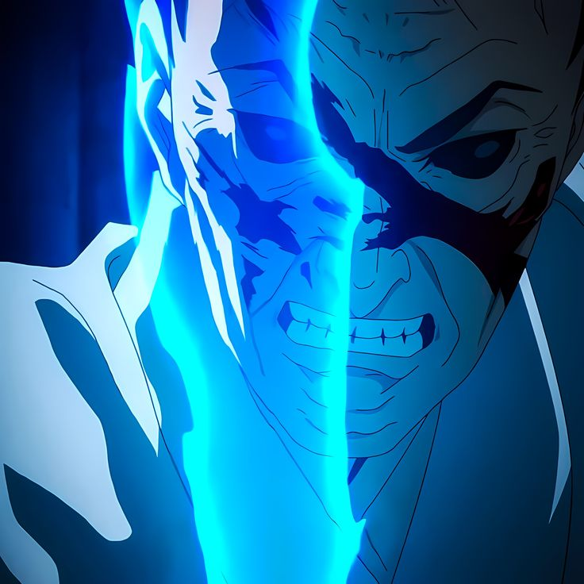

Técnica de las Diez Sombras
La técnica más codiciada del clan. Permite invocar y manipular hasta 10 shikigamis utilizando las sombras como intermediario.
Usuario: Megumi FushiguroElitismo, Tradición y Poder Heredado — 禪院家


El Clan Zenin (禪院家) es una de las Tres Grandes Familias de Hechiceros en el mundo del jujutsu, junto con los clanes Gojo y Kamo. Reconocido por su inmenso poder político, es históricamente célebre por su cultura interna elitista, basada estrictamente en la posesión de técnicas heredadas y el poder absoluto.
Creen que el valor de un hechicero depende de su fuerza de combate. Quien no aporta poder militar es considerado prescindible.
Las técnicas heredadas de nacimiento definen el estatus. Nacer sin energía maldita o sin una técnica del clan condena al repudio interno.
Mantienen su propia fuerza militar para ejecutar misiones de alto nivel, proteger la mansión y erradicar cualquier amenaza o traición.

La técnica más codiciada del clan. Permite invocar y manipular hasta 10 shikigamis utilizando las sombras como intermediario.
Usuario: Megumi FushiguroDivide cada segundo en 24 cuadros de movimiento para lograr velocidades extremas y fijar trayectorias de ataque predeterminadas.
Usuarios: Naobito y Naoya Zenin
27° Líder del Clan Zenin
Heredero directo de la Técnica de las Diez Sombras. Aunque nunca fue criado dentro de la mansión, fue nombrado líder por testamento tras la muerte de Naobito.
El Asesino de Hechiceros
Nació con Restricción Celestial pura (cero energía maldita). Abandonó el clan tras años de desprecio, demostrando que la fuerza física absoluta superaba a las técnicas tradicionales.

La Ruina del Clan
Marginada por carecer de energía maldita. Tras romper sus lazos y liberar su potencial completo, se convirtió en la ejecutora del destino final de la familia Zenin.
Hechicero de Primer Grado Especial y maestro de la Técnica de Proyección. Gobernó el clan y tiene una afición al alcohol.

Hijo de Naobito y heredero de la Técnica de Proyección. Encarna el egocentrismo y la misoginia tradicional del clan, despreciando a quienes carecen de poder.

Hermana gemela de Maki. Poseía la técnica de Creación pero sufría el rechazo del clan. Su sacrificio final permitió a Maki alcanzar la Restricción Celestial completa.

Representantes del conservadurismo extremo. Ogi (padre de Maki/Mai) y Jinichi (hermano de Toji) priorizaron la reputación del clan sobre sus propios lazos de sangre.

El rechazo sistemático hacia sus propios miembros culminó en un colapso interno. La erradicación de los altos mandos y de la unidad militar disolvió la estructura de poder del clan, extinguiendo su influencia dentro de las Tres Grandes Familias.
Impacto Histórico: La caída del Clan Zenin simbolizó el fin del sistema más conservador y destructivo sobre el que se sostenía la sociedad de jujutsu.